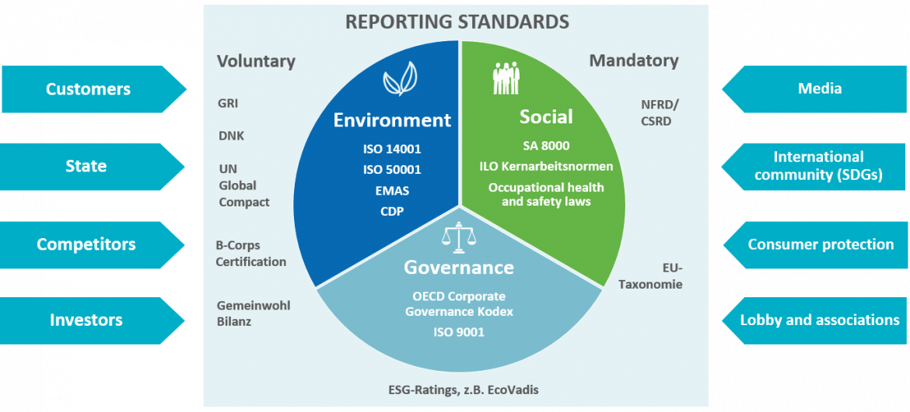
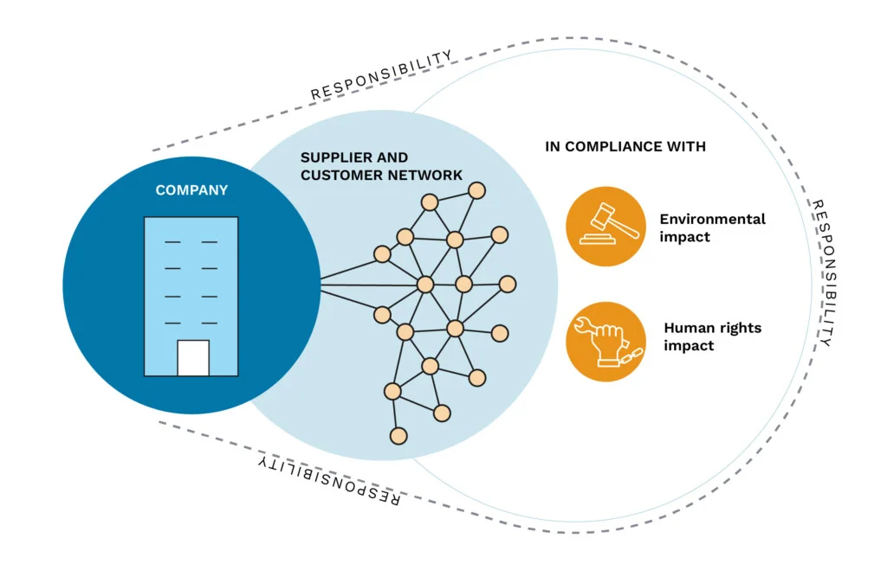

flowchart TB A[Your Company] --> B[Supplier] B --> C[Unknown Subsupplier] C --> D[???] D --> E[Origin: Lithium Mine, Congo]
AI-Enhanced Supply Chain Transparency
In 2019, Volkswagen committed to making electric vehicles more sustainable.
They published ESG reports, used certified suppliers, and pledged clean sourcing.
But a 2020 investigation by Amnesty International found:
🔶 Tier 1 looked clean.
All certifications were in place.
🔴 Tier 3 was the problem.
Child labor and unsafe mines were hidden beneath the audit trail.
“The certification meant nothing.
We didn’t see where the real risk was.”
Internal source, Amnesty report (2020) —
Source:
Amnesty International, “Powering Change: The supply chains behind clean cars” (2020)
https://www.amnesty.org/en/documents/afr62/7395/2017/en/
In 2020, Nestlé pledged to eliminate deforestation from its supply chains and committed to sourcing sustainable palm oil.
However, investigations revealed:
Despite public commitments, these issues persisted in Nestlé’s supply chain.
🔶 Public Commitments vs. Reality
Nestlé’s sustainability pledges did not align with on-the-ground practices.
🔴 Ongoing Deforestation
Continuous forest clearing was detected near supplier mills.
❌ Human Rights Concerns
Allegations included worker exploitation and land rights violations.
Sources:
In February 2018, KFC UK faced an unexpected crisis: a chicken shortage. The fast-food chain had recently switched its logistics partner from Bidvest, which operated a network of six warehouses, to DHL, which centralized operations to a single warehouse in Rugby.
This strategic change led to:
The incident highlighted the risks of over-centralization and inadequate contingency planning in supply chain management.
🔶 Centralized Logistics Failure
Transitioning to a single warehouse created a single point of failure.
🔴 Operational Disruptions
Delivery issues led to widespread store closures and supply shortages.
❌ Brand Reputation Impact
The shortage became a national news story, affecting customer trust.
Source:
Wired, “The inside story of the great KFC chicken shortage of 2018” (2018)
https://www.wired.com/story/kfc-chicken-crisis-shortage-supply-chain-logistics-experts
94% of companies have no visibility beyond Tier 1
– Deloitte, 2022
Up to 90% of ESG violations happen where data disappears**
– McKinsey, 2021
CSRD, CS3D, EUDR demand real due diligence
– Risk mapping
– Documented origin
– Verified suppliers
flowchart TB A[Your Company] --> B[Supplier] B --> C[Unknown Subsupplier] C --> D[???] D --> E[Origin: Lithium Mine, Congo]
⚠️ This is why greenwashing happens.
⚠️ This is why compliance fails.
⚠️ This is why we built SupplyLens.
“Without deep visibility, ESG reporting becomes paperwork theatre.”
– SupplyLens
Supply chains don’t just suffer from a lack of data.
They suffer from a lack of trust — and incentives to hide.
Every player has a reason to stay quiet:
If you ask for documents, many will send you PDFs.
If you ask where the data came from, the conversation ends.
💰 Opacity is profitable.
Hiding intermediaries = higher markup.
Faking compliance = cheaper business.
🧨 Transparency is risky.
Disclosing weak links = losing contracts or getting fined.
🤷 There’s no shared map.
So bad actors win by default —
because they can pretend better than they can prove.
If we want ethical trade,
then we need to make truth a competitive advantage.
If the playing field rewards hiding, then honesty becomes a disadvantage.
So a real solution doesn’t just collect data —
it shifts the incentives in the system.
It must:
In short:
🧱 It’s not about reporting tools.
It’s about building a new type of evidence.
🧠 Understands context and gaps
“Sourced through ChinaCorp” ≠ “Sourced from ChinaCorp”
🔗 Reveals hidden structures
Not just documents — relationships
🧩 Integrates finance, movement, and meaning
Supply chains are physical, economic, and narrative systems
✅ Gives good actors a chance to win
If you can prove it, you can compete
SupplyLens is an open-source tool that helps you map the reality of supply chains —
even when the data is fragmented, hidden, or manipulated.
It doesn’t just store documents.
It reasons across them.
It combines:
And it works with the world as it is —
Not as we wish it were.
📊 Built on PostgreSQL + Apache AGE + pgvector
One schema, no microservice chaos
💬 Natural language interface
“Where is EasyFiets’ lithium most likely from?”
🧠 AI + graph logic = supply chain insight
It thinks through the chain — not just shows it
🛠 Designed for:
- Researchers
- Universities
- ESG teams
- Investigative journalists
- Supply chain innovators
SupplyLens processes messy, fragmented data — and makes meaning from it.
It takes in:
Then it:
You don’t need 100’s of records. You don’t need a data team.
You just need a question — and SupplyLens will trace the answer.
📜 EU Laws Require This
CSRD: ~50,000 EU-based firms must report on full ESG impacts
→ Corporate Sustainability Reporting Directive, 2023
normative.io › CSRD Explained
CSDDD (CS3D): Human rights & environmental due diligence must go beyond Tier 1
→ EU Corporate Sustainability Due Diligence Directive, April 2024
morganlewis.com › CSDDD Adopted
📊 Research-Backed
🗂️ Data-Ready
WikiRate: 7M+ ESG datapoints from 145k+ companies
wikirate.org
Open Supply Hub: 100k+ mapped facilities & contributors
opensupplyhub.org
 
Yes — we’re building it now:
Deployment Site:
https://aisandbox1.ixworx.nl
We’re looking for:
Let’s build trust at every step of the chain.